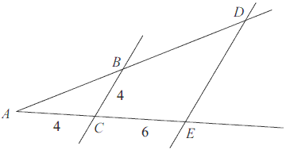
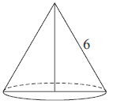

Jesteś tutaj: Matura → Matura - dodatkowe materiały → Matura podstawowa - zadania CKE - drugi zestaw
Matura podstawowa - zadania CKE - drugi zestaw
W tym dziale znajdują się zadania treningowe do matury podstawowej przygotowane
przez CKE. Zadania zostały przygotowane dla poprzedniej podstawy programowej, czyli przed 2015
rokiem. Większość tych zadań jest nadal aktualna do nowej matury po 2015 roku. Zadania zgodne z
aktualną podstawą są oznaczone w prawym górnym rogu napisem: "Matura podstawowa".
Liczba \( 3^{30}\cdot 9^{90} \) jest równa:
A.\(3^{210} \)
B.\(3^{300} \)
C.\(9^{120} \)
D.\(27^{2700} \)
A
Liczba \( 3^{\frac{8}{3}}\cdot \sqrt[3]{9^2} \) jest równa:
A.\(3^3 \)
B.\(3^{\frac{32}{9}} \)
C.\(3^4 \)
D.\(3^5 \)
C
Liczba \( \log 24 \) jest równa:
A.\(2\log 2+\log 20 \)
B.\(\log 6+2\log 2 \)
C.\(2\log 6-\log 12 \)
D.\(\log 30-\log 6 \)
B
Liczba \( 30 \) to \( p\% \) liczby \( 80 \), zatem:
A.\(p<40 \)
B.\(p=40 \)
C.\(p=42{,}5 \)
D.\(p>42{,}5 \)
A
\( 4\% \) liczby \( x \) jest równe \( 6 \), zatem:
A.\(x=150 \)
B.\(x\lt 150 \)
C.\(x=240 \)
D.\(x\gt 240 \)
A
Liczba \( y \) to \( 120\%
\) liczby \( x \). Wynika stąd, że:
A.\(y=x+0{,}2 \)
B.\(y=x+0{,}2x \)
C.\(x=y-0{,}2 \)
D.\(x=y-0{,}2y \)
B
Rozwiązaniem równania \( \frac{x-3}{2-x}=\frac{1}{2}
\) jest liczba:
A.\(-\frac{4}{3} \)
B.\(-\frac{3}{4} \)
C.\(\frac{3}{8} \)
D.\(\frac{8}{3} \)
D
Mniejszą z dwóch liczb spełniających równanie \( x^2+5x+6=0
\) jest
A.\(-6 \)
B.\(-3 \)
C.\(-2 \)
D.\(-1 \)
B
Liczba \( 1 \) jest miejscem zerowym funkcji liniowej \(
f(x)=(2-m)x+1 \). Wynika stąd, że
A.\(m=0 \)
B.\(m=1 \)
C.\(m=2 \)
D.\(m=3 \)
D
Funkcja \( f \) jest określona wzorem \( f(x)=\begin{cases} -3x+4 &\text{dla }x\lt
1\\ 2x-1 &\text{dla }x\ge 1 \end{cases} \). Ile miejsc zerowych ma ta funkcja?
A.\(0 \)
B.\(1 \)
C.\(2 \)
D.\(3 \)
A
Rysunek przedstawia wykres funkcji \(y = f(x)\).  Wskaż rysunek na którym jest
przedstawiony wykres funkcji \(y = f(x + 1)\).
Wskaż rysunek na którym jest
przedstawiony wykres funkcji \(y = f(x + 1)\). 
Wskaż rysunek na którym jest
przedstawiony wykres funkcji \(y = f(x + 1)\). D
Który z zaznaczonych przedziałów jest zbiorem rozwiązań nierówności \(|2 - x| \le 3\). 
C
Wskaż równanie osi symetrii paraboli określonej równaniem \(
y=-x^2+4x-11 \).
A.\(x=-4 \)
B.\(x=-2 \)
C.\(x=2 \)
D.\(x=4 \)
C
Wskaż funkcję kwadratową, której zbiorem wartości jest przedział \( (-\infty ;3
\rangle \).
A.\(f(x)=-(x-2)^2+3 \)
B.\(f(x)=(2-x)^2+3 \)
C.\(f(x)=-(x+2)^2-3 \)
D.\(f(x)=(2-x)^2-3 \)
A
Zbiorem rozwiązań nierówności \( x^2\ge 5 \) jest
A.\(( -\infty ;-\sqrt{5} )\cup ( \sqrt{5};+\infty ) \)
B.\(( -\infty ;-\sqrt{5} \rangle \cup \langle \sqrt{5};+\infty ) \)
C.\(\langle \sqrt{5};+\infty ) \)
D.\(\langle 5;+\infty ) \)
B
Wykres funkcji kwadratowej \( f(x)=3(x+1)^2-4 \) nie ma
punktów wspólnych z prostą o równaniu
A.\(y=1 \)
B.\(y=-1 \)
C.\(y=-3 \)
D.\(y=-5 \)
D
Prosta o równaniu \( y=a \) ma dokładnie jeden punkt
wspólny z wykresem funkcji kwadratowej \( f(x)=-x^2+6x-10 \). Wynika
stąd, że
A.\(a=3 \)
B.\(a=0 \)
C.\(a=-1 \)
D.\(a=-3 \)
C
Jaka jest najmniejsza wartość funkcji kwadratowej \(
f(x)=x^2+4x-3 \) w przedziale \( \langle 0, 3 \rangle \)?
A.\(-7 \)
B.\(-4 \)
C.\(-3 \)
D.\(-2 \)
C
Dane są wielomiany \( W(x)=3x^3-2x, V(x)=2x^2+3x \).
Stopień wielomianu \( W(x)\cdot V(x) \) jest równy
A.\(6 \)
B.\(5 \)
C.\(4 \)
D.\(3 \)
B
Ile rozwiązań rzeczywistych ma równanie \( 5x^4-13=0
\)?
A.\(1 \)
B.\(2 \)
C.\(3 \)
D.\(4 \)
B
Wskaż liczbę rozwiązań równania \(\frac{11-x}{x^2-11}=0 \).
A.\(0 \)
B.\(1 \)
C.\(2 \)
D.\(3 \)
B
Wskaż równanie prostej równoległej do prostej o równaniu \(
y=2x-7 \).
A.\(y=-2x+7 \)
B.\(y=-\frac{1}{2}x+5 \)
C.\(y=\frac{1}{2}x+2 \)
D.\(y=2x-1 \)
D
Które z poniższych równań opisuje prostą prostopadłą do prostej o równaniu \( y=4x+5 \).
A.\(y=-4x+3 \)
B.\(y=-\frac{1}{4}x+3 \)
C.\(y=\frac{1}{4}x+3 \)
D.\(y=4x+3 \)
B
Punkty \( A=(-1,3)\) i \(C=(7,9) \) są przeciwległymi
wierzchołkami prostokąta \( ABCD \). Promień okręgu opisanego na tym prostokącie jest równy
A.\(10 \)
B.\(6\sqrt{2} \)
C.\(5 \)
D.\(3\sqrt{2} \)
C
Liczba punktów wspólnych okręgu o równaniu \(
(x+3)^2+(y-1)^2=4 \) z osiami układu współrzędnych jest równa
A.\(0 \)
B.\(1 \)
C.\(2 \)
D.\(4 \)
C
Środek \( S \) okręgu o równaniu \( x^2+y^2+4x-6y-221=0
\) ma współrzędne
A.\(S=(-2,3) \)
B.\(S=(2,-3) \)
C.\(S=(-4,6) \)
D.\(S=(4,-6) \)
A
Dane są długości boków \(|BC|=5\) i \(|AC|=3\) trójkąta
prostokątnego \( ABC \) o kącie ostrym \( \beta \) .  Wtedy
Wtedy
Wtedy A.\(\sin \beta =\frac{3}{5} \)
B.\(\sin \beta =\frac{4}{5} \)
C.\(\sin \beta =\frac{3\sqrt{34}}{34} \)
D.\(\sin \beta =\frac{5\sqrt{34}}{34} \)
C
Kąt \( \alpha \) jest ostry i \( \sin \alpha =\frac{1}{4}
\). Wówczas
A.\(\cos \alpha \lt \frac{3}{4} \)
B.\(\cos \alpha =\frac{3}{4} \)
C.\(\cos \alpha =\frac{\sqrt{13}}{4} \)
D.\(\cos \alpha >\frac{\sqrt{13}}{4} \)
D
Kąt \( \alpha \) jest kątem ostrym i \( \operatorname{tg} \alpha =\frac{1}{2} \).
Jaki warunek spełnia kąt \( \alpha \)?
A.\(\alpha \lt 30^\circ \)
B.\(\alpha =30^\circ \)
C.\(\alpha =60^\circ \)
D.\(\alpha >60^\circ \)
A
Kąt między cięciwą \( AB \) a styczną do okręgu w punkcie \( A \) ma miarę \(
\alpha =62^\circ \). Wówczas: 
A.\(\beta =118^\circ \)
B.\(\beta =124^\circ \)
C.\(\beta =138^\circ \)
D.\(\beta =152^\circ \)
B
Kąt środkowy i kąt wpisany są oparte na tym samym łuku. Suma ich miar jest równa \(
180^\circ \). Jaka jest miara kąta środkowego?
A.\(60^\circ \)
B.\(90^\circ \)
C.\(120^\circ \)
D.\(135^\circ \)
C
Różnica miar kątów wewnętrznych przy ramieniu trapezu równoramiennego, który nie
jest równoległobokiem, jest równa \( 40^\circ \). Miara kąta przy krótszej podstawie jest równa.
A.\(120^\circ \)
B.\(110^\circ \)
C.\(80^\circ \)
D.\(70^\circ \)
B
Odcinki \( BC\) i \(DE \) są równoległe. Długości odcinków \( AC, CE \) i \( BC \) są podane na rysunku. Długość odcinka \( DE \) jest równa 
A.\(6 \)
B.\(8 \)
C.\(10 \)
D.\(12 \)
C
Pole kwadratu wpisanego w okrąg o promieniu \( 4 \) cm jest równe
A.\(64\) cm2
B.\(32\) cm2
C.\(16\) cm2
D.\(8\) cm2
B
Ciąg \(a_n\) jest określony wzorem \(a_n=(-3)^n\cdot
(9-n^2)\) dla \(n\ge 1\). Wynika stąd, że
A.\( a_3=-81 \)
B.\( a_3=-27 \)
C.\( a_3=0 \)
D.\( a_3>0 \)
C
Liczby \(x-1,\ 4,\ 8\) (w podanej kolejności) są
pierwszym, drugim i trzecim wyrazem ciągu arytmetycznego. Wówczas liczba \(x\) jest równa
A.\( 3 \)
B.\( 1 \)
C.\( -1 \)
D.\( -7 \)
B
Liczby \(-8,\ 4,\ x+1\) (w podanej kolejności) są
pierwszym, drugim i trzecim wyrazem ciągu geometrycznego. Wówczas liczba \(x\) jest równa.
A.\( -3 \)
B.\( -1{,}5 \)
C.\( 1 \)
D.\( 15 \)
A
Wszystkich liczb naturalnych dwucyfrowych, które są podzielne przez \(6\) lub przez
\(10\), jest
A.\( 25 \)
B.\( 24 \)
C.\( 21 \)
D.\( 20 \)
C
Wszystkich liczb naturalnych dwucyfrowych, których obie cyfry są mniejsze od \(5\)
jest
A.\( 16 \)
B.\( 20 \)
C.\( 25 \)
D.\( 30 \)
B
Liczba sposobów, na jakie Ala i Bartek mogą usiąść na dwóch spośród pięciu miejsc w
kinie, jest równa
A.\( 25 \)
B.\( 20 \)
C.\( 15 \)
D.\( 12 \)
B
Mediana danych: \(0, 1, 1, 2, 3, 1\) jest równa
A.\( 1 \)
B.\( 1{,}5 \)
C.\( 2 \)
D.\( 2{,}5 \)
A
Mediana danych przedstawionych w tabeli liczebności jest równa
| wartość | \(0\) | \(1\) | \(2\) | \(3\) |
| liczebność | \(5\) | \(2\) | \(1\) | \(1\) |
A.\( 0 \)
B.\( 0{,}5 \)
C.\( 1 \)
D.\( 5 \)
A
Średnia arytmetyczna danych przedstawionych na diagramie częstości jest równa 
A.\( 1 \)
B.\( 1{,}2 \)
C.\( 1{,}5 \)
D.\( 1{,}8 \)
A
Ze zbioru liczb \(\{1, 2, 3, 4, 5, 6, 7, 8\}\) wybieramy
losowo jedną liczbę. Liczba \(p\) oznacza prawdopodobieństwo otrzymania liczby podzielnej przez
\(3\). Wtedy
A.\( p\lt 0{,}25 \)
B.\( p=0{,}25 \)
C.\( p=\frac{1}{3} \)
D.\( p>\frac{1}{3} \)
B
O zdarzeniach losowych \(A\) i \(B\) zawartych w \(\Omega \) wiadomo, że \(B\subset
A\), \(P(A)=0{,}7\) i \(P(B)=0{,}3\). Wtedy
A.\( P(A\cup B)=1 \)
B.\( P(A\cup B)=0{,}7 \)
C.\( P(A\cup B)=0{,}4 \)
D.\( P(A\cup B)=0{,}3 \)
B
Przekątna sześcianu ma długość \(3\). Pole powierzchni całkowitej tego sześcianu
jest równe
A.\( 54 \)
B.\( 36 \)
C.\( 18 \)
D.\( 12 \)
C
Pole powierzchni całkowitej sześcianu jest równe \(24\) cm2. Objętość
tego sześcianu jest równa
A.\( 8 \) cm3
B.\( 16 \) cm3
C.\( 27 \) cm3
D.\( 64 \) cm3
A
Przekątna prostopadłościanu o wymiarach \(2 \times 3 \times
5\) ma długość 
A.\( \sqrt{13} \)
B.\( \sqrt{29} \)
C.\( \sqrt{34} \)
D.\( \sqrt{38} \)
D
Przekrój osiowy walca jest kwadratem o boku długości \(6\). Objętość tego walca
jest równa
A.\( 18\pi \)
B.\( 54\pi \)
C.\( 108\pi \)
D.\( 216\pi \)
B
Przekrój osiowy stożka jest trójkątem równobocznym o boku długości \(6\). Pole
powierzchni bocznej tego stożka jest równe: 
A.\( 12\pi \)
B.\( 18\pi \)
C.\( 27\pi \)
D.\( 36\pi \)
B
Rozwiąż równanie \(\frac{2-3x}{1-2x}=-\frac{1}{2}\).
\(x=\frac{5}{8}\)
Rozwiąż układ równań \(\begin{cases} x+3y=5\\ 2x-y=3 \end{cases} \).
\(\begin{cases} x=2 \\ y=1 \end{cases} \)
Rozwiąż nierówność \(x^2+6x-7\le 0\).
\(x\in \left\langle -7; 1 \right\rangle \)
Rozwiąż równanie \(2x^3-x^2-6x+3=0\).
\(x=\frac{1}{2}\) lub \(x=\sqrt{3}\) lub \(x=-\sqrt{3}\)
O funkcji liniowej \(f\) wiadomo, że \(f(1)=2\) oraz, że do wykresu tej funkcji
należy punkt \(P = (-2,3)\). Wyznacz wzór funkcji \(f\).
\(f(x)=-\frac{1}{3}x+\frac{7}{3}\)
Oblicz miejsca zerowe funkcji \[f(x)=\begin{cases} 2x+1\quad \text{dla }x\le 0\\
x+2\quad \text{dla }x>0 \end{cases} \]
\(x=-\frac{1}{2}\)
Naszkicuj wykres funkcji \[f(x)=\begin{cases} 2x+1\quad \text{dla }x\le 0\\
x+2\quad \text{dla }x>0 \end{cases} \]
Oblicz najmniejszą wartość funkcji kwadratowej \(f(x)=x^2-6x+1\) w przedziale \(\langle 0,1 \rangle\).
\(-4\)
Wielomiany \(W(x)=ax(x+b)^2\) i \(V(x)=x^3+2x^2+x\) są równe. Oblicz \(a\) i \(b\).
\(a=1\), \(b=1\)
Wyrażenie \(\frac{3}{x-3}-\frac{x}{x+1}\) zapisz w postaci ilorazu dwóch
wielomianów.
\(\frac{-x^2+6x+3}{(x-3)(x+1)}\)
Napisz równanie prostej równoległej do prostej o równaniu \(2x-y-11=0\) i przechodzącej przez punkt \(P=(1,2)\).
\(y=2x\)
Wyznacz równanie okręgu stycznego do osi \(Oy\),
którego środkiem jest punkt \(S=(3, -5)\).
\((x-3)^2+(y+5)^2=9\)
Wyznacz równanie okręgu o środku w punkcie \(S = (3,
-5)\) przechodzącego przez początek układu współrzędnych.
\((x-3)^2+(y+5)^3=34\)
Wyznacz równanie prostej zawierającej środkową \(CD\) trójkąta \(ABC\), którego
wierzchołkami są punkty \(A=(-2, -1)\), \(B = (6, 1)\), \(C = (7, 10)\).
\(y=2x-4\)
W trójkącie prostokątnym, w którym przyprostokątne mają długości \(2\) i \(4\),
jeden z kątów ostrych ma miarę \(\alpha \). Oblicz \(\sin \alpha \cdot \cos
\alpha \).
\(\frac{2}{5}\)
Kąt \(\alpha \) jest ostry i \(\sin \alpha =\frac{1}{4}\). Oblicz \(3+2\operatorname{tg}^2\alpha \).
\(\frac{47}{15}\)
Punkt \(D\) leży na boku BC trójkąta równoramiennego \(ABC\), w którym \(|AC| =
|BC|\). Odcinek \(AD \) dzieli trójkąt \(ABC\) na dwa trójkąty równoramienne w taki sposób, że
\(|AB| = |AD| = |CD|\). Oblicz miary kątów trójkąta \(ABC\). 
\(72^\circ \), \(72^\circ \), \(36^\circ \)
Oblicz pole trójkąta równoramiennego \(ABC\), w którym \(|AB| = 24\) i \(|AC| = |BC| = 13\).
\(60\)
Liczby \(4, 10, c\) są długościami boków trójkąta
równoramiennego. Oblicz \(c\).
\(c=10\)
Liczby \(6, 10, c\) są długościami boków trójkąta
równoramiennego. Oblicz \(c\).
\(c=6\) lub \(c=10\)
Liczby \(6, 10, c\) są długościami boków trójkąta
prostokątnego. Oblicz \(c\).
\(c=2\sqrt{34}\) lub \(c=8\)
Liczby \(x - 1, x, 5\) są długościami boków trójkąta
równoramiennego. Oblicz \(x\).
\(x=5\) lub \(x=6\)
Obwód czworokąta wypukłego \(ABCD\) jest równy \(50\) cm.
Obwód trójkąta \(ABD\) jest równy \(46\) cm, a obwód trójkąta \(BCD\) jest
równy \(36\) cm. Oblicz długość przekątnej \(BD\).
\(|BD|=16\)
Ile wyrazów ujemnych ma ciąg \((a_n)\) określony wzorem \(a_n =
n^2 - 2n - 24\) dla \(n \ge 1\)?
\(5\)
Liczby \(2, x-3, 8\) w podanej kolejności są pierwszym,
drugim i czwartym wyrazem ciągu arytmetycznego. Oblicz \(x\).
\(x=7\)
Wyrazami ciągu arytmetycznego \((a_n)\) są kolejne liczby naturalne, które przy
dzieleniu przez \(5\) dają resztę \(2\). Ponadto \(a_3 = 12\). Oblicz \(a_{15}\).
\(a_{15}=72\)
Ile jest liczb naturalnych czterocyfrowych takich, że w ich zapisie dziesiętnym
występuje jedna cyfra nieparzysta i trzy cyfry parzyste.
\(2125\)
Ile jest liczb naturalnych dwucyfrowych podzielnych przez \(15\) lub \(20\)?
\(9\)
Ile jest liczb naturalnych trzycyfrowych, w których cyfra dziesiątek jest o \(2\)
większa od cyfry jedności?
\(72\)
Na jednej prostej zaznaczono \(3\) punkty, a na drugiej \(4\) punkty. Ile jest
wszystkich trójkątów, których wierzchołkami są trzy spośród zaznaczonych punktów?
\(30\)
Średnia arytmetyczna liczb: \(3, 1, 1, 0, x, 0\) jest
równa \(2\). Oblicz \(x\).
\(x=7\)
Oblicz średnią arytmetyczną danych przedstawionych na poniższym diagramie
częstości. 
\(\frac{9}{10}\)
Oblicz medianę danych: \(0, 1, 3, 3, 1, 1, 2, 1\).
\(1\)
Oblicz medianę danych przedstawionych w postaci tabeli liczebności
| wartość | \(0\) | \(1\) | \(2\) | \(3\) |
| liczebność | \(4\) | \(3\) | \(1\) | \(1\) |
\(1\)
Ze zbioru liczb \(\{1, 2, 3, 4, 5, 6, 7, 8, 9, 10,
11\}\) wybieramy losowo jedną liczbę. Oblicz prawdopodobieństwo otrzymania liczby
podzielnej przez \(3\) lub przez \(2\).
\(\frac{7}{11}\)
Ze zbioru liczb naturalnych dwucyfrowych wybieramy losowo jedną liczbę. Oblicz
prawdopodobieństwo otrzymania liczby podzielnej przez \(15\).
\(\frac{1}{15}\)
Rzucamy dwa razy symetryczną sześcienną kostką do gry. Oblicz prawdopodobieństwo
otrzymania iloczynu oczek równego \(5\).
\(\frac{1}{18}\)
\(A\) i \(B\) są takimi zdarzeniami losowymi zawartymi w \(\Omega \), że \(A\subset
B\) oraz \(P(A)=0{,}3\) i \(P(B)=0{,}4\). Oblicz \(P(A\cup B)\).
\(0{,}4\)
\(A\) i \(B\) są takimi zdarzeniami losowymi zawartymi w \(\Omega \), że \(A\subset
B\) oraz \(P(A)=0{,}3\) i \(P(B)=0{,}7\). Oblicz prawdopodobieństwo różnicy \(B\backslash A\).
\(0{,}4\)
Przekątna sześcianu ma długość \(9\). Oblicz pole powierzchni całkowitej tego
sześcianu.
\(162\)
Przekrój osiowy stożka jest trójkątem równoramiennym o podstawie długości \(12\).
Wysokość stożka jest równa \(8\). Oblicz pole powierzchni bocznej tego stożka. 
\(60\pi \)
Oblicz sinus kąta między przekątną sześcianu, a jego płaszczyzną podstawy.
\(\frac{\sqrt{3}}{3}\)
Czworokąty \(ABCD\) i \(APQR\) są kwadratami. Udowodnij, że \(|BP| = |DR|\). 
Na boku \(BC\) trójkąta \(ABC\) wybrano punkt \(D\) tak, by \(|\sphericalangle CAD|
= |\sphericalangle ABC|\). Odcinek \(AE\) jest dwusieczną kąta \(DAB\). Udowodnij, że \(|AC| =
|CE|\). 
Oblicz sumę wszystkich liczb trzycyfrowych zapisanych wyłącznie za pomocą cyfr
wybranych ze zbioru \(\{0,1,2,3\}\).
\(10392\)
Z pojemnika, w którym są dwa losy wygrywające i trzy losy puste, losujemy dwa razy
po jednym losie bez zwracania. Oblicz prawdopodobieństwo, że otrzymamy co najmniej jeden los
wygrywający. Wynik przedstaw w postaci ułamka nieskracalnego.
\(\frac{7}{10}\)
Z miejscowości \(A\) i \(B\) oddalonych od siebie o \(182\) km wyjeżdżają naprzeciw
siebie dwaj rowerzyści. Rowerzysta jadący z miejscowości \(B\) do miejscowości \(A\) jedzie ze
średnią prędkością mniejszą od \(25\) km/h. Rowerzysta jadący z miejscowości \(A\) do
miejscowości \(B\) wyjeżdża o \(1\) godzinę wcześniej i jedzie ze średnią prędkością o \(7\)
km/h większą od średniej prędkości drugiego rowerzysty. Rowerzyści spotkali się w takim miejscu, że
rowerzysta jadący z miejscowości \(A\) przebył do tego miejsca \(\frac{9}{13}\) całej drogi z \(A\)
do \(B\). Z jakimi średnimi prędkościami jechali obaj rowerzyści?
\(v_1=7\) km/h, \(v_2=14\) km/h
Uczeń przeczytał książkę liczącą \(480\) stron, przy czym każdego dnia czytał taką
samą liczbę stron. Gdyby czytał każdego dnia o \(8\) stron więcej, to przeczytałby tę książkę o
\(3\) dni wcześniej. Oblicz, ile dni uczeń czytał tę książkę.
\(15\)
Liczby \(a, b, c\) tworzą w podanej kolejności ciąg geometryczny. Suma tych liczb
jest równa \(93\). Te same liczby, w podanej kolejności są pierwszym, drugim i siódmym wyrazem ciągu
arytmetycznego. Oblicz \(a, b\) i \(c\).
\(a=3\), \(b=15\), \(c=75\)
Wyznacz wzór na \(n\)-ty wyraz ciągu arytmetycznego wiedząc, że suma pierwszych
pięciu jego wyrazów jest równa \(10\), a wyrazy trzeci, piąty i trzynasty tworzą w podanej
kolejności ciąg geometryczny.
\(a_n=2\) lub \(a_n=3n-7\)
Podstawą ostrosłupa prawidłowego czworokątnego \(ABCDS\) jest kwadrat \(ABCD\).
Pole trójkąta równoramiennego \(ACS\) jest równe \(120\) oraz \(|AC| : |AS| = 10 : 13\) . Oblicz
pole powierzchni bocznej tego ostrosłupa.
\(20\sqrt{313}\)
Podstawą ostrosłupa \(ABCDE\) jest kwadrat \(ABCD\). Punkt \(F\) jest środkiem
krawędzi \(AD\), odcinek \(EF\) jest wysokością ostrosłupa (patrz rysunek). Oblicz objętość
ostrosłupa, jeśli wiadomo, że \(|AE|=15\), \(|BE|=17\).
\(\frac{64\sqrt{209}}{3}\)
Dany jest trójkąt prostokątny \(ABC\), w którym \(|BC| = 30\), \(|AC| = 40\),
\(|AB| = 50\). Punkt \(W\) jest środkiem okręgu wpisanego w ten trójkąt. Okrąg wpisany w trójkąt
\(ABC\) jest styczny do boku \(AB\) w punkcie \(M\). Oblicz długość odcinka \(CM\).
\(2\sqrt{145}\)
Na zewnątrz trójkąta prostokątnego \(ABC\), w którym \(|\sphericalangle ACB| = 90\)
oraz \(|AC| = 5\), \(|BC| = 12\) zbudowano kwadrat \(ACDE\) (patrz rysunek). Punkt \(H\) leży na
prostej \(AB\) i kąt \(|\sphericalangle EHA| = 90^\circ\). Oblicz pole trójkąta \(HAE\). 
\(\frac{750}{169}\)
Wykaż, że prawdziwa jest nierówność \(\sqrt{2^{50} + 1} + \sqrt{2^{50} - 1} \lt
2^{26}\).
Udowodnij, że jeśli:
a) \(x, y\) są liczbami rzeczywistymi,
to \(x^2 + y^2 \ge 2xy\).
b) \(x, y, z\) są liczbami rzeczywistymi takimi, że \(x + y + z = 1\), to \(x^2 + y^2 + z^2 \ge 1/3\).
b) \(x, y, z\) są liczbami rzeczywistymi takimi, że \(x + y + z = 1\), to \(x^2 + y^2 + z^2 \ge 1/3\).
Punkt \(D\) leży na boku \(BC\) trójkąta równoramiennego \(ABC\), w którym \(|AC| =
|BC|\). Odcinek \(AD\) dzieli trójkąt \(ABC\) na dwa trójkąty równoramienne w taki sposób, że \(|AD|
= |CD|\) oraz \(|AB| = |BD|\) (patrz rysunek). Udowodnij, że \(|\sphericalangle ADC| = 5\cdot
|\sphericalangle ACD| \) . 
Dane są dwa półokręgi o wspólnym środku \(O\) i średnicach odpowiednio \(AB\) i
\(CD\) (punkty \(A, B, C, D\) i \(O\) są współliniowe). Punkt \(P\) leży na wewnętrznym półokręgu,
punkt \(R\) leży na zewnętrznym półokręgu, punkty \(O, P\) i \(R\) są współliniowe. Udowodnij, że
\(|\sphericalangle APB| + |\sphericalangle CRD| = 180^\circ\).